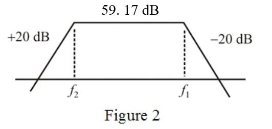

Refer to Figure P1.76 in the textbook.
Refer to Table 1.2 in the textbook.
Determine the transfer function for the left side part of the circuit.
Therefore, the transfer function is  .
.
Refer to Figure P1.76 in the textbook.
Refer to Table 1.2 in the textbook.
Determine the transfer function for the left side part of the circuit.
Therefore, the transfer function is .
This transfer function shows, it is a low pass filter. Thus, the cut-off frequency is,
Therefore, the corner frequency is .
Use the source transform technique to re-draw the right-side circuit diagram.
Apply voltage division rule and determine the output voltage.
Therefore, the transfer function is,
.
Therefore, the corner frequency is .
Determine the over-all transfer function.
Hence, the overall transfer function is .
The corner frequencies are  and
and .
.
Determine the band width of the bode plot.
Therefore, the band width is .
The circuit is combination of low pass and high pass filter, thus the circuit has a plot like band pass.
The constant magnitude is,

The bode plot increases its magnitude below the corner frequency and it maintains constant upto the corner frequency, .
Draw the bode plot for the transfer function.

Thus, the bode plot is shown in Figure 2.